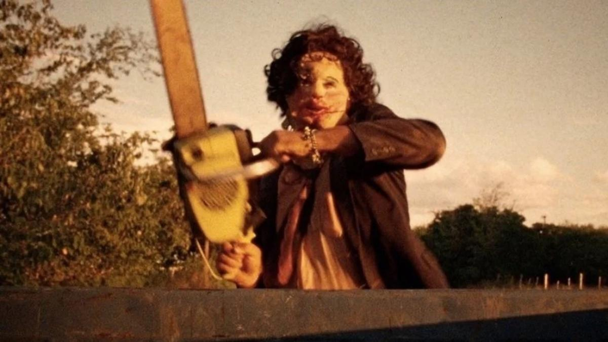

La Masacre de Texas
The Texas Chain Saw Massacre
📅 1974
🏷️ Slasher / Terror Rural
Director: Tobe Hooper
Un grupo de jóvenes viaja por las carreteras de Texas y termina atrapado en la remota casa de una familia de caníbales grotescos, liderados por un asesino enmascarado que porta una motosierra.
- Reparto principal: Marilyn Burns (Sally Hardesty), Gunnar Hansen (Leatherface / Cara de Cuero).
- Elementos significativos: La motosierra, la máscara confeccionada con piel humana, el calor sofocante visual y el diseño de sonido desorientador.
- Desarrollo: Filmada con un presupuesto bajísimo ($140,000) y en condiciones extremas de calor de más de 40°C en Texas, lo que generó un ambiente de tensión real entre los actores.
- Importancia e influencia: Fundó las bases estilísticas del cine *slasher* moderno, influyendo en la creación de villanos icónicos enmascarados e imponentes.